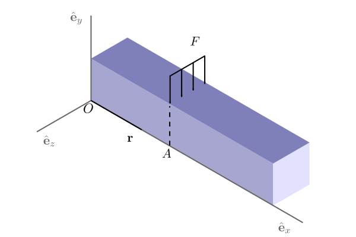

Gráficos isométricos en Inkscape: Parte 2
La semana pasada publiqué una guía rápida sobre dibujos isométricos dibujar usando Inkscape. En ese post, mostré cómo obtener imágenes que se proyectan a las caras de un bloque isométrico.
Después de mi publicación, Biswajit Banerjee me preguntó en Twitter si podría repetir el proceso con un ejemplo más complejo, y él sugirió el siguiente diagramaa

que, creo, se creó en Inkscape usando la opción "Crear caja 3D".
En esta publicación, haré lo siguiente:
Usar el mismo enfoque de la semana pasada para recrear este esquema.
Sugerir mi enfoque preferido para dibujar este esquema.
Primer enfoque
Repetiré el resumen de la semana pasada. Hay que tener en cuenta que Inkscape trata la rotación en sentido horario como positiva.

Luego, para crear una caja con las dimensiones deseadas, primero creamos cada rectángulo con las dimensiones correctas (en proyecciones paralelas). En el siguiente ejemplo, usamos caras con relaciones de aspecto 3:2, 2:1 y 4:3. La caja de la derecha es la cifra obtenida después de aplicar las transformaciones descritas en el esquema anterior.

Ahora podemos proceder, para recrear la figura deseada. No conozco las dimensiones exactas de la caja; supongo que la sección transversal era un cuadrado y la relación de aspecto era 5:1. Después de aplicar las transformaciones para cada rectángulo obtenemos lo siguiente (agregando algunos ajustes aquí y allá).

Segundo enfoque
Para este tipo de esquema, preferiría crear una cuadrícula axonométrica
(Archivo > Propiedades de documento > Cuadrículas). Después de
agregar la cuadrícula a nuestro lienzo es bastante sencillo dibujar las
figuras en vista isométrica. El lienzo debe ser similar a la siguiente
imagen.

Luego podemos dibujar cada cara usando la cuadrícula. Si queremos ser
más precisos podemos activar Ajustar a nodos cúspides. La siguiente
animación muestra la construcción paso a paso.
Y obtenemos la siguiente imagen.
Conclusión
Como mencioné, Inkscape se puede usar para dibujar figuras simples en proyección isométrica. Sin embargo, sugiero utilizar un CAD como FreeCAD para geometrías más complicadas.


{kind=link}